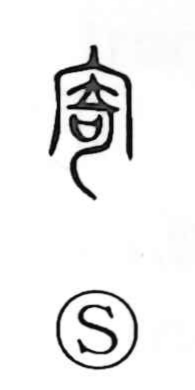

寄

Uncategorized
Kun: yoru, yoseru, tayoru | On: ki
to approach ・ to draw near ・ to rely on ・ to entrust
Explanation
寄 is a phono-semantic character built on the phonetic 奇 (ki). In its ancient form, 奇 shows a large, bent sword set together with a sacred receptacle for covenant petitions to the gods. Because such a bent sword is unstable and cannot stand upright, the graph came to suggest inclining or leaning, the same notion seen in 倚, “to lean against.” 寄 develops this image into the human sphere: leaning upon a sacred object becomes leaning upon a person—relying on someone and entrusting matters to them. Hence its uses in yoru and tayoru (to rely on) and in the sense of makasu (to leave to, entrust). The compound kifu originally meant to turn to or rely on a person, though today it commonly refers to offering money or goods.